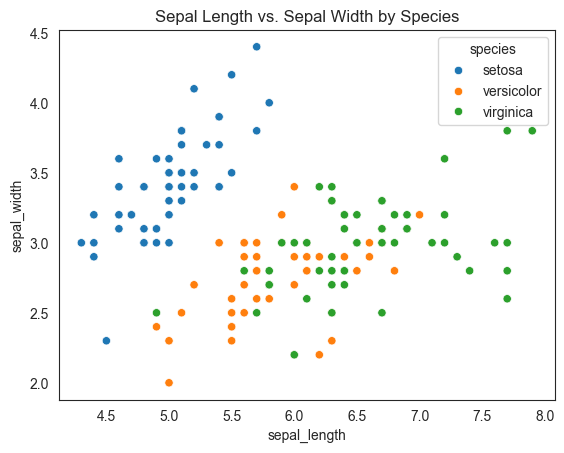
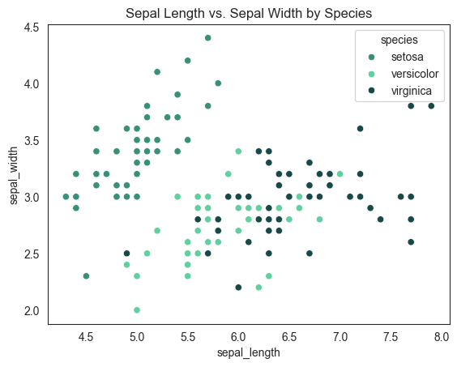
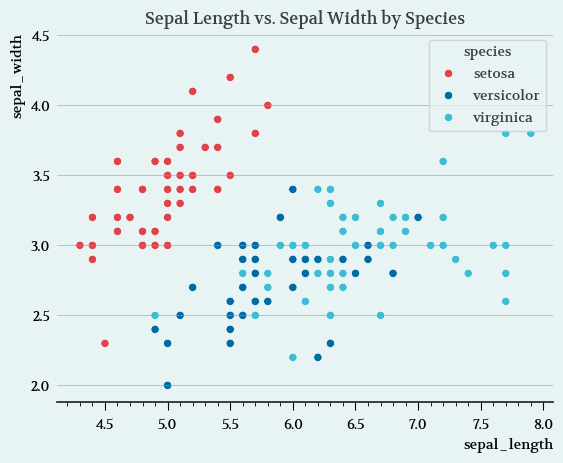

In my last post I talked about R. One of my main drivers to learn R is how pretty the plots are. Of course, there are a ton of other features packed in R and it is still worth learning. However, the algorithms on my social media has been feeding me other interesting blogs. They have led me to PyPalettes and MoreThemes. Both of these are easy to use and plug right into matplotlib and seaborn plots. Super handy!
Vanilla Seaborn Plot
For comparison, here is a basic seaborn plot in Python. Like the last post, this will be the iris dataset. Already scatterplot looks pretty good.
import seaborn as snsimport matplotlib.pyplot as pltiris = sns.load_dataset('iris')sns.set_style("white")sns.scatterplot(data=iris, x='sepal_length', y='sepal_width', hue='species')plt.title('Sepal Length vs. Sepal Width by Species')plt.show()

Additional Colors with PyPalettes
Matplotlib and Seaborn already comes equipped with handy themes and color names. These can be found here for matplolib and for seaborn. Users can also input additional hex codes for custom color palettes. But for users like me who love colors but cannot decide on which look nice, themes are the best way to go. Unfortunately, there are times that I think the Seaborn themes are not enough. I then agonize over a colorwheele, spending hours tweaking and adjusting to find the right one. Usually they are right.
Enter PyPalettes. This is an easy to use python package that will output a list of hexcodes for matplotlib/seaborn plots. Even better, PyPalettes comes equipped with more than 2,500 different color palettes. These can be cycled through on an interactive palette finder with sample code showing how to use them. Very handy!
Using PyPalette
Using PyPalette is easy. Everything goes through the load_cmap function. Then all that is required is the color palette name. There are a lot of them, so the interactive palette finder is necessary for first time users or to find your new favorite color palette.
To get these functioning with seaborn, they will need to be converted into a list of hexcodes, which is done using the .colors method.
from pypalettes import load_cmapcmap = load_cmap("bulbasaur") # Pokemon #0001# get list of colorspalette = cmap.colors# print hex codeprint(palette)
Once the list is given, they can be fed directly into the seaborn image using the palette argument.
sns.scatterplot(data=iris, x='sepal_length', y='sepal_width', hue='species', palette=palette)sns.set_style("white")plt.title('Sepal Length vs. Sepal Width by Species')plt.show()
/var/folders/8b/wl7k2st57fs66kc1p7bwd_h80000gn/T/ipykernel_12018/2748902051.py:1: UserWarning: The palette list has more values (13) than needed (3), which may not be intended.
sns.scatterplot(data=iris, x='sepal_length', y='sepal_width', hue='species', palette=palette)

Now to explore the other 2,000+ palettes!
Special Themes
But what makes R special, in my eyes, are the special themes available. One of the gold standard figures for any plot enthusiast are the ones produced by the Economist. Lucky for R coders, ggplot2 has a nice theme that can easily replicate the Economist style plots. it is as simple as layering in theme_economist() on the plot. Oh, and importing the ggthemes package.
Adding Themes
In my last post, I said what made R special, in my eyes, are the special themes available. Now some of these hard to create themes have been replicated and can be easily plugged into matplotlib/seaborn plots. Including my favorite Economist style plots. Enter morethemes. This package is by the same developer as PyPallettes (yellow sunflower) and they have some cool stuff.
Setting a theme is easy. All that is required is calling the theme before creating and drawing the plot.
Using morethemes
All that is required to get morethemes working is setting the theme. There are a few to choose from and the documentation lists them (16 as of this writing) with examples/demos. Here we will use my favorite, the Economist style.
import morethemes as mtmt.set_theme("economist")
Nothing else is needed. Just create your matplotlib/seaborn plot as normal.
iris = sns.load_dataset('iris')sns.scatterplot(data=iris, x='sepal_length', y='sepal_width', hue='species')plt.title('Sepal Length vs. Sepal Width by Species')plt.show()

The figure looks great!
And for users that do not want to install morethemes as a dependency, you can dig into the morethemes sourcecode or use the function mt.get_rcparams(“theme_name”) to find the theme you like then copy and paste the code into your own projects. Like this:
Finding packages like this gets me excited. I already spend a lot of time trying to figure out color palettes for my data. Now I have 2,500 to go through. Or if I’m feeling lazy, I can call in one of the nice 16 themes already created.